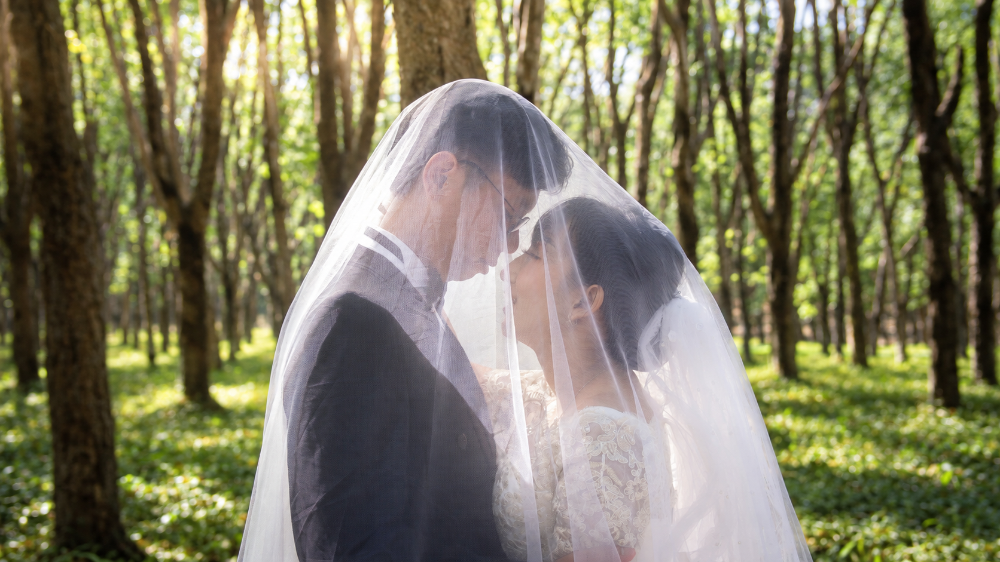

01
Pemberkatan Pernikahan
Akad / Pemberkatan
RABU · 30 DESEMBER 2026
10.00 WIB
Gereja St. Antonius Padua
Purbayan Surakarta
Purbayan Surakarta
Jl. Arifin No. 1, Kp. Baru, Kec. Ps. Kliwon, Kota Surakarta, Jawa Tengah 57111
Lihat Lokasi ↗

Dengan penuh sukacita, kami mengundang Bapak/Ibu/Saudara/i untuk hadir dan memberikan doa restu pada hari pernikahan kami.
Setiap kisah memiliki awalnya sendiri. Dengan rasa syukur, kami melangkah bersama menuju babak baru—membangun kehidupan yang dipenuhi kasih, iman, tawa, dan harapan.


Potongan kecil dari perjalanan kami—dalam doa, percakapan sederhana, dan kebahagiaan yang tumbuh bersama.


Di antara langkah-langkah sederhana, kami menemukan alasan baru untuk bersyukur, tertawa, dan terus memilih satu sama lain.
Tiga bingkai, tiga cerita, dan banyak alasan untuk selalu tersenyum saat mengingat hari-hari ini.


Merupakan kebahagiaan bagi kami apabila Anda berkenan hadir dan menjadi bagian dari hari istimewa ini.
Menuju hari ketika dua perjalanan menjadi satu.
Kehadiran dan doa restu Anda adalah hadiah terindah bagi kami. Jika ingin berbagi tanda kasih, informasi dapat ditambahkan di bagian ini.
Detail rekening atau alamat pengiriman hadiah dapat dimasukkan sebelum publikasi.
Merupakan suatu kehormatan dan kebahagiaan bagi kami apabila Anda berkenan hadir serta memberikan doa restu.
Sampai bertemu di hari bahagia kami.